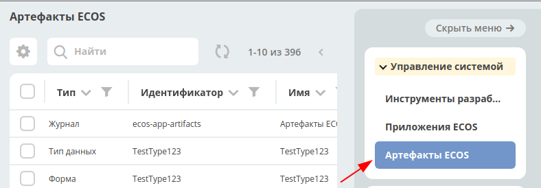

ECOS Приложения¶
Определения¶
Артефакт - единица расширения системы. Примеры артефактов: Тип, Форма, Журнал
ECOS Приложение (ECOS App) - приложение, которое содержит в себе артефакты. Основная цель - переносимость артефактов между стендами и возможность версионирования. ECOS Application является артефактом, но его нельзя включить в другие приложения т.к. это системный тип.
Работа с приложениями¶
Работа сприложениями осуществляется на странице администратора системы.
http://host/v2/bpmn-designer?journalId=ecos-apps

На этой странице можно: 1. Cоздавать и редактировать приложения 2. Скачивать приложения
Структура архива приложения¶
meta.json // метаданные приложения
artifacts: // папка с артефактами приложения
type0:
subType0:
artifact0.json
artifact1.json
...
subType1:
artifact0.json
artifact1.json
...
typ1:
subType0:
artifact0.json
...
subType1:
artifact0.json
...
...
Артефакты¶
Для управления артефактами предусмотрен журнал «Артефакты ECOS». В данный журнал попадают все артефакты, которые достигли микросервиса ecos-apps.
В данном журнале есть возможность выполнить следующие действия:
Скачать историю артефакта
При нажатии на действие можно выбрать дату, с которой необходимо выгрузить историю артефакта. При сабмите формы скачивается zip архив со всеми версиями артефакта с указанной даты. Если последний артефакт был загружен ранее чем выбраная дата, то будет выгружен только он (т.е. всегда будет как минимум 1 артефакт).
Формат имени папки с версией артефакта: дата_созданияTвремя_созданияZ-[USER | APPLICATION | ECOS_APP] Дата создания указывается в часовом поясе UTC.

Скачать артефакт
Всегда скачивается zip архив с выбранным артефактом
Передеплоить артефакт вручную
Отправить артефакт из ecos-apps в микросервис. Может быть полезно при разработке или после сбоя в базе целевого микросервиса т.е. ecos-apps не пропускает артефакт если он ранее был успешно задеплоен.
Сбросить пользовательскую версию артефакта
Сброс происходит до той версии, которая была установлена из приложения (APPLICATION или ECOS_APP). Сбрасывать можно только артефакты, которые в колонке «Тип источника» имеют USER.
Источники артефактов¶
Есть 3 возможных источника артефактов:
USER - артефакт добавляет или модифицирует пользователь;
APPLICATION - артефакт загружается из приложений, которые подключены к интерфейсу команд;
ECOS_APP - артефакт загружается из приложения ECOS;
Все 3 источника имеют свою политику по обновлению артефактов:
USER¶
Артефакт обновляется безусловно. Любое изменение артефакта приводит к его изменению в базе микросервиса ecos-apps.
APPLICATION¶
Артефакт обновляется если он не принадлежит никакому приложению ECOS и была загружена версия артефакта, которая отличается от предыдущей загруженной из APPLICATION. Пример: Если у нас есть следующие ревизии артефакта:
rev2 USER
rev1 USER
rev0 APPLICATION
rev0 - самая первая версия артефакта rec2 - самая последняя версия артефакта
Видим, что первая версия артефакта поступила из приложения, а другие две от пользователя. Если в такой ситуации в микросервис приходит версия rev0 от APPLICATION, то ничего не поменяется не смотря на то что rev2 != rev0. Если из приложения придет rev3, то новая ревизия загрузится и станет актуальной:
rev3 APPLICATION
rev2 USER
rev1 USER
rev0 APPLICATION
ECOS_APP¶
Работает аналогично APPLICATION, но при загрузке артефакту проставляется признак принадлежности приложению. Если артефакт принадлежит приложению, то он не обновляется из APPLICATION.